政治学概論II《2026》
イントロダクション
![]()
December 2, 2026
Keywords
- シラバス
- スケジュール
Ⅰ. 講師紹介
講師紹介
- 氏名：苅谷千尋（かりやちひろ）
- 所属：教育支援センター（主担当業務：高大接続コア・センター業務）
- 専門：政治学 > 政治思想史（イギリス）
- 18世紀イギリスの議会政治：レトリック受容と新興メディア
- 聞き手を説得する技法の受容（キケロ；サルスティウス；タキトゥス）
- 総合雑誌に掲載された偽装ディベートとそれをモデルとする議会政治の発展
- 18世紀イギリスの議会政治：レトリック受容と新興メディア
- 担当講義
- Webサイト
校務（高大接続）
高大接続リーディングセミナー
本で拓く探究ワークショップ
- 「本との出会いが探究をより豊かにしてくれます」をコンセプトとするワークショップ（ワークショップの模様）
高大接続ラウンドテーブル
- 探究学習を題材に、高校生と大学生が交流（ラウンドテーブルの模様）
Ⅲ. シラバス
シラバス > 授業の目的
本授業は、政治学に関する基礎的知識を学ぶことを目的としています。グローバル化が進む今日、日本を世界の中に位置づける視点、また他国の問題、グローバルな問題を理解することが重要です。また、日本政治の特徴を理解するための有効な手段の一つは、それを他国と比較することです。この授業では、このような意味での比較を通して政治に関わる基本概念の理解を通して、政治や政策を動かす仕組み・メカニズムについて説明します。
シラバス > 授業の到達目標
- 受講生が、国民主権、国民国家、主権国家体制、国際法、選挙制度、官僚制度を中心とした公民分野の基礎的知識を得て、それを初学者に対してわかりやすく説明することができる。
- 受講生が、比較政治という手法を用いて、政治の諸現象を初学者に対してわかりやすく説明することができる。
- 受講生が､政治学の諸概念について､自分なりの視点を加味した､関係図を作成することができる｡
- 受講生が、国際政治学、比較政治学ならびに公民分野に関わる基本的な資料、文献を読みこなすことができる。
- 受講生が、1及び2で得た知識を背景に、日々のニュース報道や新聞報道をより深く、また相対的に理解したうえで、自分自身の意見や解釈を、確かな根拠を明示しながら、明快に記述することができる。
シラバス > 授業の進め方
初回と第2回（2024年12月を予定）と第3回と第4回（2025年1月を予定）の授業はオンデマンド配信にて実施します｡それ以降の授業は対面で実施いたします（2025年2月4日から4日間）｡
授業はスライド資料を用いておこないます。受講生は、各単元に関連する指定文献を事前に読み、それについて要約や感想を書くことが求められます（リーディング・アサインメント（＝文献予習））。また､すべての回答は一覧表にして配布します。
また､Googleフォームを用いて、定期的に受講者の授業理解を確認します（授業の感想）。オンデマンド授業は毎回､対面授業の場合は､一日に1回とします。こちらも､すべての回答を一覧表にして配布します。
シラバス > 単位についての考え方
Note | 予習復習も単位取得に必要な時間です
- 授業出席時間だけでは、単位取得時間を満たしません
- 学修の観点だけでなく、大学制度上、予習復習は必須です
1単位＝45時間の学修の考え方（「大学設置基準」）
我が国の大学教育は単位制度を基本としており、1単位あたり45時間の学修を必要とする内容をもって構成することが標準とされています。ここでいう１単位あたりの学修時間は、授業時間内の学修時間だけではなく、その授業の事前の準備学修・事後の準備復習を合わせたものとなっています（文部科学省高等教育局 （n.d.））
2単位14週間の授業の場合
- 90時間の学修を要し、うち1/3の30時間が授業時間
- 残りの60時間が授業外での学修時間となる
- 慣例的に概算計算される
シラバス > 教科書・参考書補足
教科書
- 使用しない
参考書
- 高坂正堯『国際政治：恐怖と希望』（中公新書）、2017年（初版1966年））
世界平和を実現するために人類は古くから叡智を傾けたが、戦いは繰り返された。戦争の危機はなぜ去らないのか――この問いに答える書物は少ない。国際関係を単純に図式化・理想化することなく、また「複雑怪奇」といって正確な認識を諦めることもなく追い求めた著者が、軍縮、経済交流、国際機構などを具体的に検討しながら、国家利益やイデオロギーがからみあう現実世界を分析し、組織的に論じた国際政治の入門書。
- 建林正彦・曽我謙悟・待鳥聡史『比較政治制度論』（有斐閣アルマ､2008年）
国により，政治的安定や腐敗などの政治的帰結，経済成長や財政赤字などの経済的帰結に，なぜ違いが生じるのか。制度を変えることで，何が変わるのだろうか。政治的・経済的帰結の違いを政治制度によって説明する新制度論の諸議論を整理し，紹介する。
シラバス > オフィスアワー等
学生からの質問への対応方法等
- 対面授業の期間中は､授業前後に質問､相談に応じます
- この期間以外に、質問・連絡が必要な場合は、社会科教育講座主任の諸岡先生に御連絡ください
Ⅲ. スケジュール
スケジュール
授業
| 授業回 | 日付 | 開催形態 | タイトル | キーワード |
|---|---|---|---|---|
| 1 | 12-02 | オンデマンド | イントロダクション | 成績評価；国際政治学と比較政治学 |
| 2 | 12-16 | オンデマンド | 国際政治学（1） | グローバルイシュー①難民問題；②公衆衛生 |
| 3 | 01-06 | オンデマンド | 国際政治学（2） | グローバルイシュー②主権と自治 |
| 4 | 01-20 | オンデマンド | 比較政治学（1） | ケース①ジェンダー；ケース②憲法 |
| 5 | 02-03 | 対面 | 国際政治学（3） | 現実主義；主権国家；主権国家体制；国際社会論 |
| 6 | 02-03 | 対面 | 国際政治学（4） | 勢力均衡と軍備縮小；英国学派とIR |
| 7 | 02-03 | 対面 | 国際政治学（5） | グローバルイシュー③スタンリー・キューブリック監督『博士の異常な愛情』 |
| 8 | 02-04 | 対面 | 国際政治学（6） | 国際法；国際機構 |
| 9 | 02-04 | 対面 | 国際政治学（7） | 前半のまとめ／ディスカッション |
| 10 | 02-04 | 対面 | 比較政治学（2） | 比較政治学の方法と対象 |
| 11 | 02-05 | 対面 | 比較政治学（3） | 選挙制度；議会制度 |
| 12 | 02-05 | 対面 | 比較政治学（4） | 執政制度；官僚制度 |
| 13 | 02-08 | 対面 | 比較政治学（5） | 中央・地方関係制度 |
| 14 | 02-08 | 対面 | 比較政治学（6） | 後半のまとめ／ディスカッション2 |
リーディングアサインメント
| 回 | date | タイトル | 著者 | 文献 | 締め切り |
|---|---|---|---|---|---|
| 1 | 12-02 | イントロダクション | 古谷経衡 | 「日本人は何故デモに行かないのか」（「大竹紳士交遊録」2026年） | 2026-12-01 |
| 2 | 12-16 | 国際政治学（1） | 川久保文紀 | グローバル時代の人の移動（『国際政治』2019年） | 2026-12-14 |
| 3 | 01-06 | 国際政治学（2） | 細谷雄一・遠藤乾 | 対談 これはグローバリゼーションの反動なのか？（『中央公論』2014年） | 2027-01-05 |
| 4 | 01-20 | 比較政治学（1） | 前田健太郎 | 「日本政治の二つの見方」（『女性のいない民主主義』） | 2027-01-18 |
| 5 | 02-03 | 国際政治学（3） | 高坂正堯 | 「現実への対処」（『国際政治』） | 2027-02-01 |
| 6 | 02-03 | 国際政治学（4） | スティーブン・ナギ | カーニー演説はミドルパワー連携に資するか（『外交』2026年） | 2027-02-01 |
| 8 | 02-04 | 国際政治学（6） | 朝日新聞 | ICC赤根所長「赤根所長単独インタビュー ICC解体あってはならぬ」/「制裁下のICCに加盟国ができること オランダの国際法学者から提案」 | 2027-02-02 |
| 11 | 02-05 | 比較政治学（3） | 建林正彦・曽我謙悟・待鳥聡史 | 議会制度の構成要素（『比較政治制度論』） | 2027-02-03 |
| 12 | 02-05 | 比較政治学（4） | 建林正彦・曽我謙悟・待鳥聡史 | 官僚の自律性と能力（『比較政治制度論』） | 2027-02-03 |
| 13 | 02-08 | 比較政治学（5） | 建林正彦・曽我謙悟・待鳥聡史 | 中央地方関係制度の3つの側面（『比較政治制度論』） | 2027-02-05 |
国際政治学
国際政治学 > 3つの研究領域
- 国家間関係
- 外交
- 17世紀ヨーロッパにおいて、制度、スタイルが大きく発展
- 例：日米関係、日韓関係、G7
- 外交
- 他国の国内政治（エリアスタディ）
- 比較の上で必要な基礎知識
- 例：アメリカ大統領選挙
- アメリカのような大国の国内政治は無視できない
- 渡辺将人「民主党左派とカマラ・ハリス：「擬似サンダース政権」継続圧力と予備選の洗礼なき指名の功罪）
- グローバルイシュー
- 国境を越える課題とそれへの対処
- 例：環境問題；公衆衛生問題
- 国境を越える課題とそれへの対処
国際政治学 > 国際政治の基本的特徴
基本的特徴（1と3）
- （物理的）強制力を背景とする主権の欠如
- 国際社会＝無政府社会論（自然社会論）
- 複雑な利害関係と普遍的な価値の不在
- 責任者と問題の当事者が錯綜
- 代表と世論という政治システムの欠如
- ➡ ただし、完全な弱肉強食の社会にはなっていない点に注意が必要
協調が生まれる背景
- 国際社会を律する制度や慣行（国際機構；国際法）
- 大国の責任論（自制論）
- 国家利益と国際社会の利益は必ずしも対立しない
- 国際世論（NPO；NGO；マスメディア）
比較政治学
日本ってどんな国 > 出羽守と愛国者さま
「出羽守」と「尾張守」論法
- 「海外では（出羽）」「日本はもう終わり（尾張）だ」（河野 （2020））
- 海外の評価基準の受け売り（海外の美化）
- 日本に対する低い評価
「SNSの愛国者さま」
- 政権（特に安倍政権）の絶対的擁護
- 自国の美談大好き（ゴミ拾う「美しい日本人」）
- 排外主義；陰謀論
ポイント
- どちらも比較軸、客観視に問題あり
- ステレオタイプ（判で押したような国民像）
日本ってどんな国 > 研究者の視点とデータの可視化
アカデミズムを頼る
- 本田由紀『「日本」ってどんな国？：国際比較データで社会が見えてくる』 （ちくまプリマー新書､2021年）
- 比較政治学という研究アプローチ
- 比較政治制度論：制度効果（制度を原因とする政治の動態）の把握を、国家間レベルで比較することで特定
データを可視化する
- 人の作った図に頼らない（教科書や政府も含めて！）
- 信頼できるデータの探索＋可視化（R - ggplot)
- 世界価値観調査（World Values Survey）：公式サイト ；Wikipedia - ja
- 国民負担率
- 信頼できるデータの探索＋可視化（R - ggplot)
日本の教育の特異性
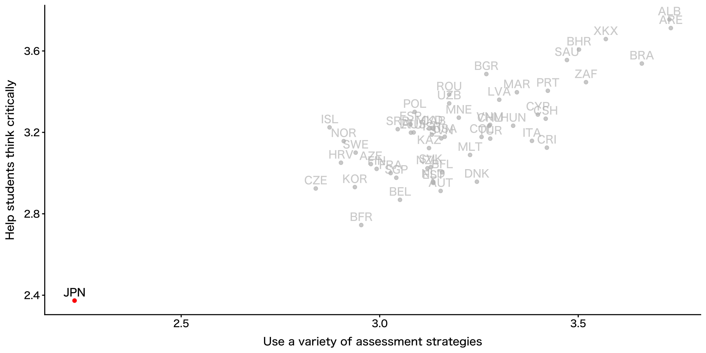
日本の教育の特異性
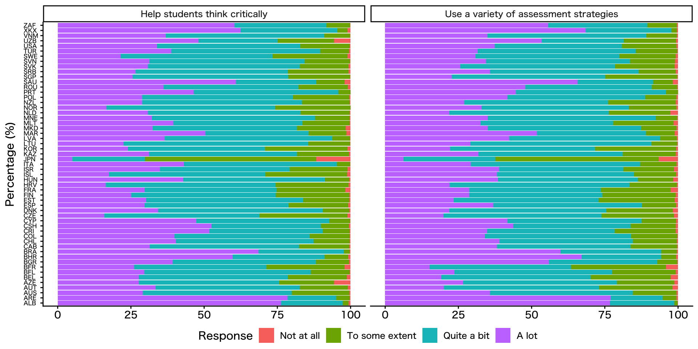
世界価値観調査 > 回答者（日本）の世帯収入
スマートフォンを使って、ポートレートモード（縦持ち）で見る場合、表示領域の関係で画像が表示されません。ランドスケープモード（横持ち）でご覧下さい（以下同じ）
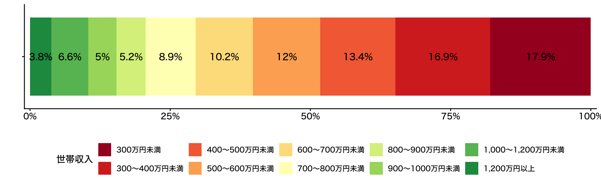
Souce: WVS Wave 7 (2017-2022)
- 以下同じ
日本ってどんな国 > 世界価値観調査 > 人生は自分の思い通りになるか
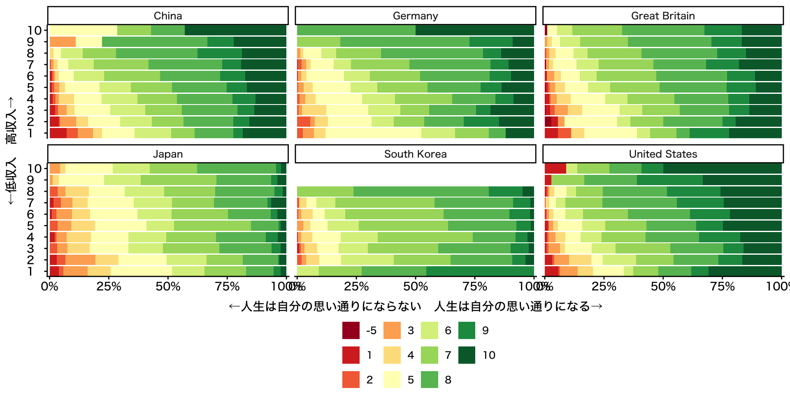
日本
- 高収入だからといって、人生が思い通りになるとは思わない人が多い
- 他国と比較して、全体に、人生は思い通りにならないと思っている人が多い
日本ってどんな国 > 世界価値観調査 > 競争か平等か
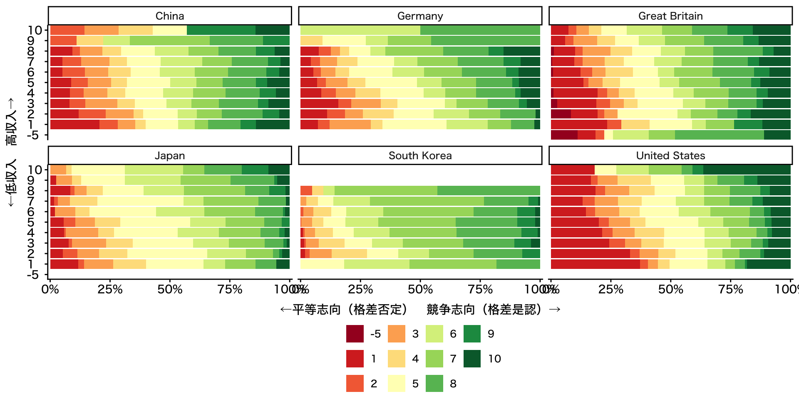
日本
- 全体に平等志向が少ない
- 所得と価値（平等志向、競争志向）に関係性が見られない
日本ってどんな国 > 世界価値観調査 > 小さな政府志向
- 小さな政府志向＝収入再分配機能の否定
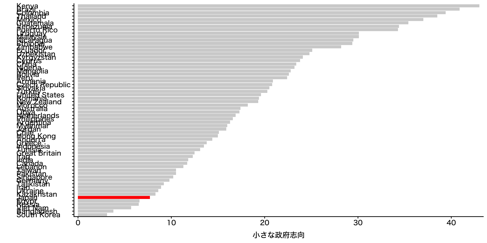
日本
- 小さな政府を強く求める者は少ない
日本ってどんな国 > 世界価値観調査 > 大きな政府志向＝所得再分配機能の肯定
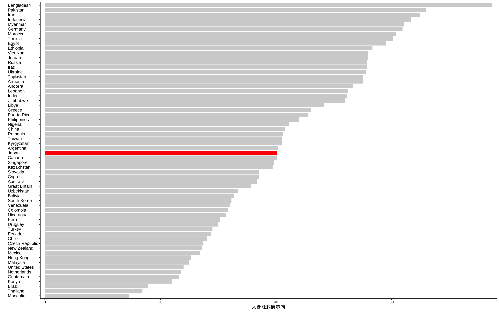
- 日本：大きな政府を強く求める者は、各国比較のなかで真ん中ぐらい
日本ってどんな国 > 世界価値観調査 > 政府の所得再分配機能
Q. 政府が富裕層に課税し、貧困層に補助金を支給することは・・・
- 民主主義の本質的な特徴ではない（赤色）；民主主義の本質的な特徴である（緑色）
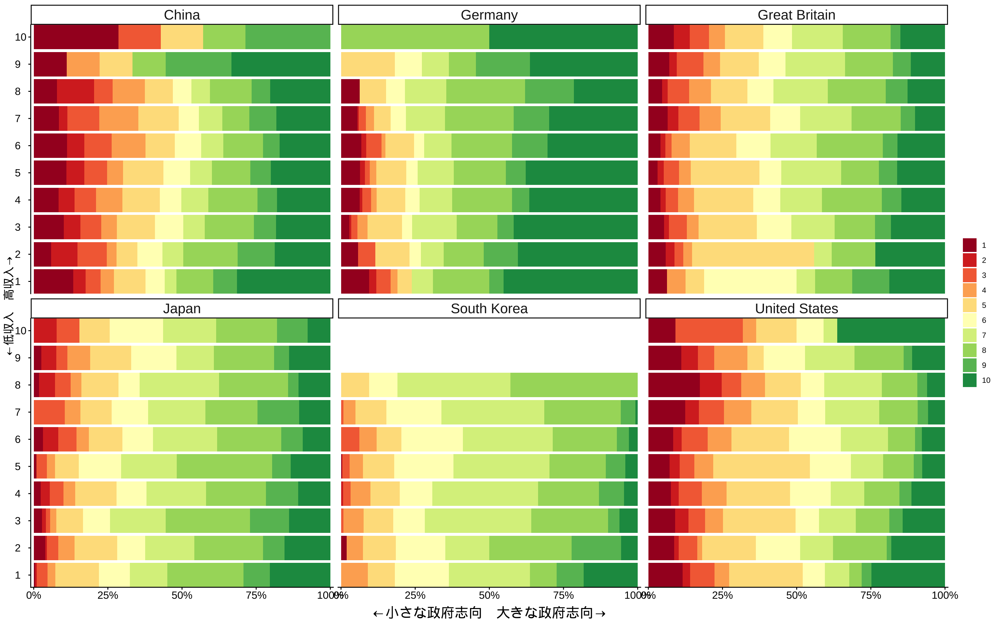
日本ってどんな国 > 世界価値観調査 > 政治に関心あり
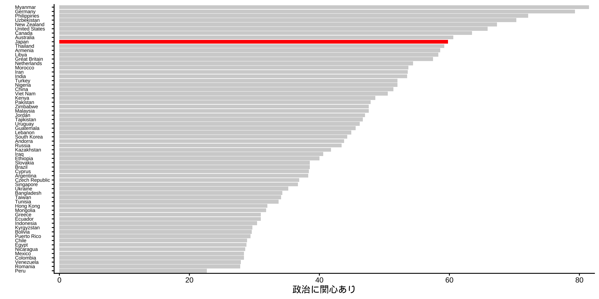
日本ってどんな国 > 世界価値観調査 > 政治に関心なし
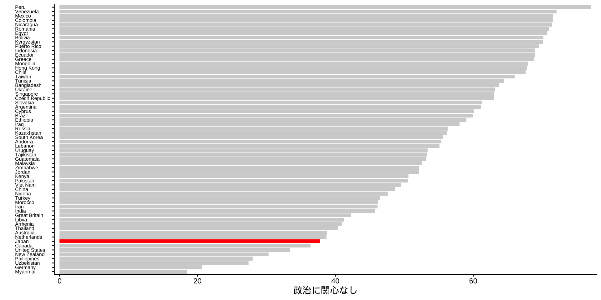
日本ってどんな国 > 世界価値観調査 > 政治的関心の有無×収入
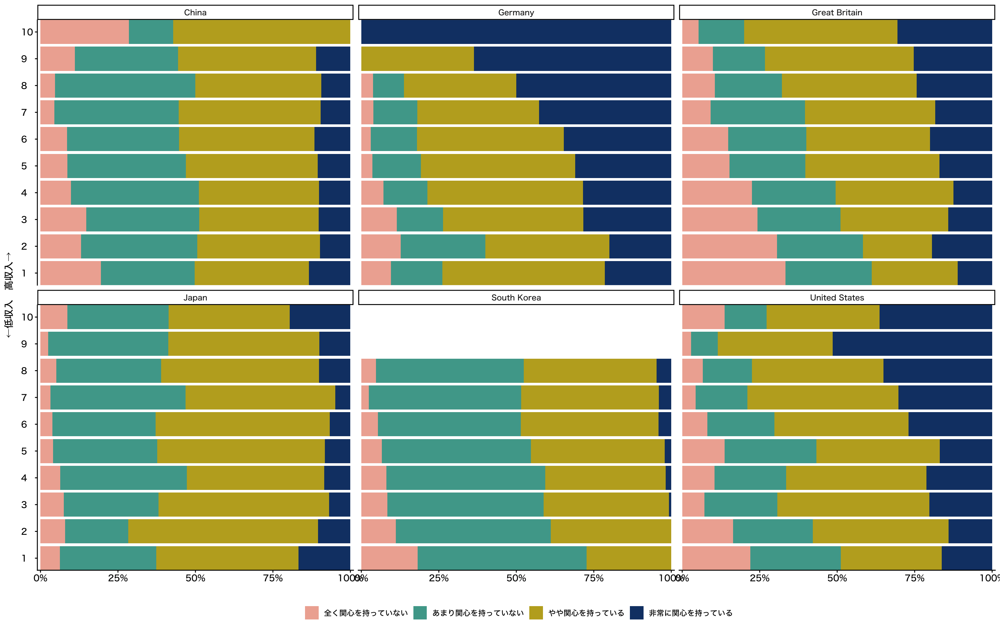
日本ってどんな国 > 世界価値観調査 > 政治について話す機会×収入
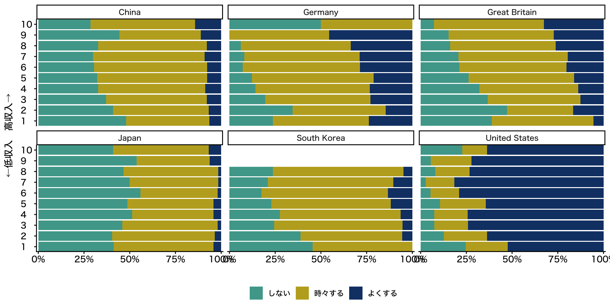
日本ってどんな国 > 国民負担率
租税負担率
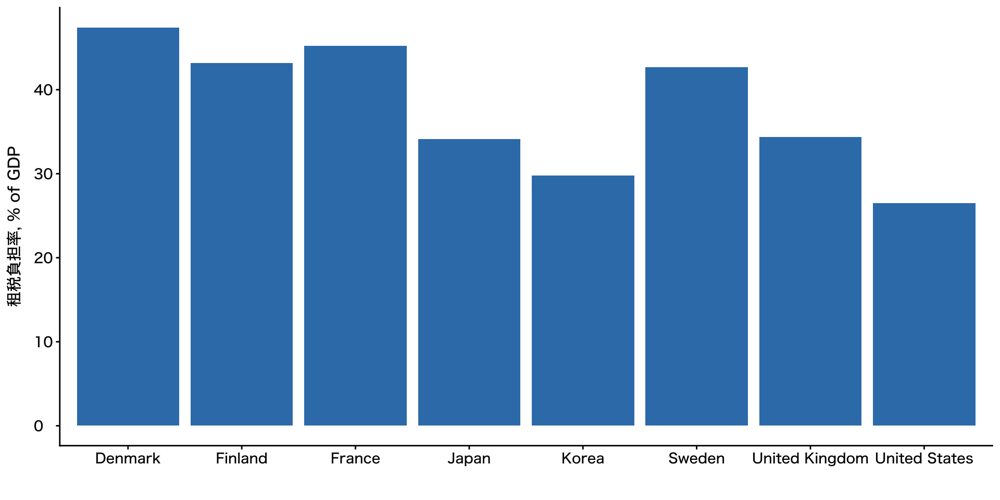
日本ってどんな国 > 国民負担率
社会保障負担率
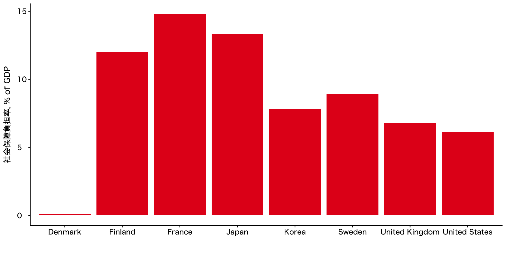
日本ってどんな国 > 国民負担率
国民負担率（租税負担率 + 社会保障負担率）
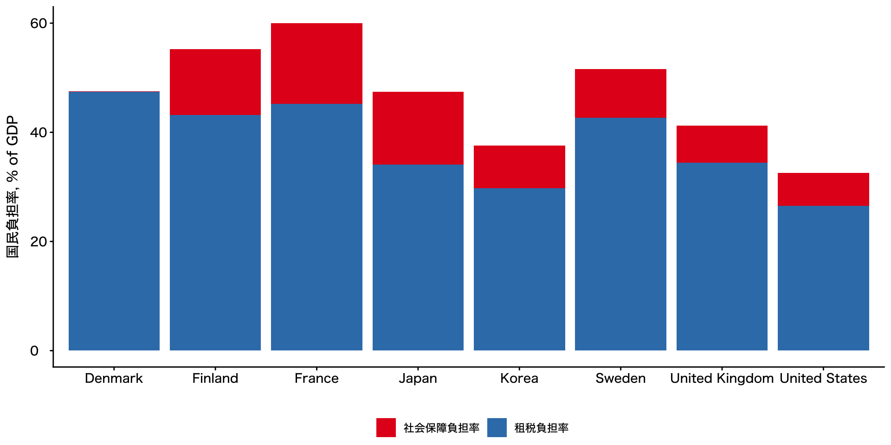
- SOUCE: OECD: Global Revenue Statistics Database（上記から算出）
日本ってどんな国 > 国民負担率（租税負担率 + 社会保障負担率）
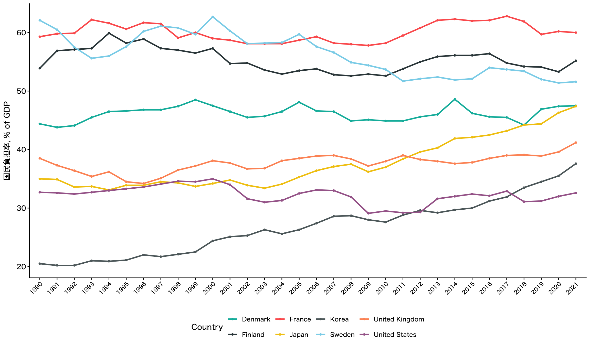
Ⅵ. 宿題と次回の持参物
宿題と次回の持参物
- 宿題：
引用文献
引用文献
河野 有理（2020）．「不思議の勝ち」を抱きしめて Voice，6月, 86–93.
文部科学省高等教育局. (n.d.). 大学における教育内容・方法の改善等について. https://www.mext.go.jp/a_menu/koutou/daigaku/04052801/003.htm